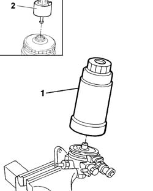
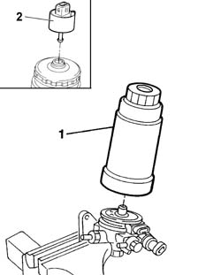

1044B20 FUEL FILTER FILTERING ELEMENT - REPLACE
- Path
- Procedures > 10 ENGINE UNIT > 1044 FUEL CIRCUIT PUMP/S AND DEVICES > 1044B FUEL FILTERS > 1044B20 FUEL FILTER FILTERING ELEMENT - REPLACE
- Kind
- repair procedure (removal / refitting; the operation number is the code)
- Applies to
- engines: 2.0 JTD 8V, 2.3 JTD 16V, 2.8 JTD 8V; all production periods
- Interactive page
- https://sloeber94.github.io/elrnDB-fDct/en/#/244000773
Applies to: engines: 2.8 JTD 8V; all production periods
 Removing
Removing
 Refitting
RefittingSee in Op. 1048A10
See in Op. 1044B10
- Place the fuel filter in the vice.
1. Undo the filter element from the assembly.
2. Separate the water sensor from the filter element.
 | Description | Connector |
|---|---|---|
2 | Water in diesel filter sensor | K031 |

Applies to: engines: 2.8 JTD 8V; all production periods
Refitting
Removing- Tighten the new filter element in place.
- Tighten the water sensor to the filter element.
| Description | Connector |
|---|---|---|
. | Water in diesel filter sensor | K031 |
- Remove the fuel filter assembly from the vice.
See in Op. 1044B10
See in Op. 1048A10
Applies to: engines: 2.0 JTD 8V; all production periods
Removing
RefittingSee in Op. 1048A10
See in Op. 1044B10
- Place the fuel filter in the vice.
1. Undo the filter element from the assembly.
2. Separate the water sensor from the filter element.
| Description | Connector |
|---|---|---|
2 | Water in diesel filter sensor | K031 |
Applies to: engines: 2.0 JTD 8V; all production periods
Refitting
Removing- Tighten the new filter element in place.
- Tighten the water sensor to the filter element.
| Description | Connector |
|---|---|---|
. | Water in diesel filter sensor | K031 |
- Remove the fuel filter assembly from the vice.
See in Op. 1044B10
See in Op. 1048A10
Applies to: engines: 2.3 JTD 16V; all production periods
Removing
RefittingSee in Op. 1048A10
See in Op. 1044B10
- Position the fuel filter assembly in a vice fitted with protective jaws.
1. Undo and remove the filter element for the fuel filter using a suitable tool.
2. Remove the water sensor and fit it on the new filter element.

Applies to: engines: 2.3 JTD 16V; all production periods
Refitting
Removing- Fit a new fuel filter filter element and tighten it by hand.
- Remove the fuel filter from the vice.
See in Op. 1044B10
See in Op. 1048A10
Topics that link to this page (8)
- B10 ENGINE DOES NOT START / UNDER NO CIRCUMSTANCES
- B13 ENGINE STARTS WITH DIFFICULTY'
- B20 ENGINE STARTS, AND CUTS OUT STRAIGHT AWAY
- D03 ENGINE NOT RUNNING SMOOTHLY / (IRREGULAR OPERATION)
- D04 ENGINE NOT RUNNING SMOOTHLY
- D05 ENGINE DOES NOT PRODUCE BEST PERFORMANCE
- D10 ENGINE IDLE IRREGULAR
- D21 ENGINE CUTS OUT WHILST DRIVING